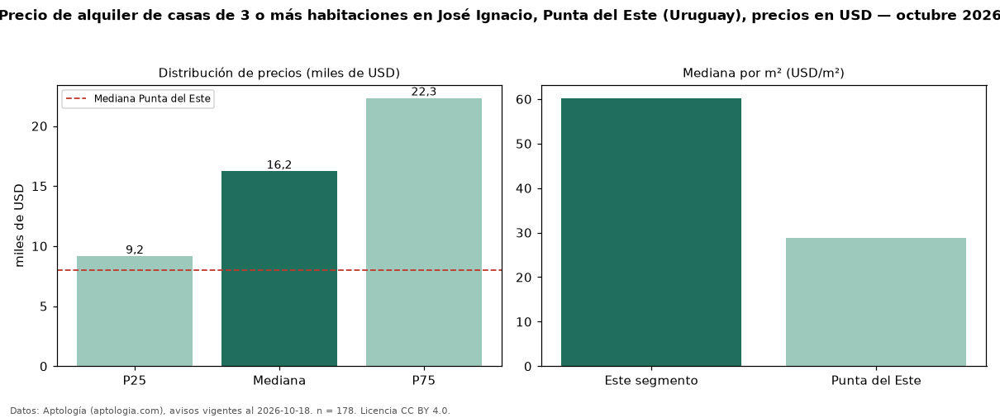

Precio de alquiler de casas de 3 o más habitaciones en José Ignacio, Punta del Este (Uruguay), precios en USD — octubre 2026
USD 16.225 al mes es el canon mediano de casas de 3 o más habitaciones en alquiler en José Ignacio, Punta del Este (Uruguay) (n = 178 avisos). Eso es 103 % por encima de la mediana de Punta del Este para casas de 3 o más habitaciones (USD 8.000). Por metro cuadrado, la mediana es USD 60,21/m² al mes (n = 132 avisos con área), 109 % por encima de Punta del Este (USD 28,75/m²). Son 82 % de los 216 avisos de casas en alquiler de la zona, cuya mediana general es USD 15.000 (+8 %). El área mediana anunciada es 245 m². La mitad central de los avisos va de USD 9.150 a USD 22.320 (razón 2,4), una dispersión alta. Datos: Aptología (aptologia.com), CC BY 4.0 — https://www.aptologia.com/uy/alquiler/punta-del-este/jose-ignacio. Archivos: PDF, CSV con las cifras y gráfica PNG.

| Avisos únicos | 178 |
|---|---|
| Percentil 25 | COP 9.150 |
| Mediana | COP 16.225 |
| Percentil 75 | COP 22.320 |
| Mediana por m² | COP 60 |
Fuente: avisos vigentes de portales inmobiliarios recopilados por Aptología, deduplicados (mínimo 30 avisos únicos por celda). Precios pedidos, no cerrados. Fecha: 2026-10-18.